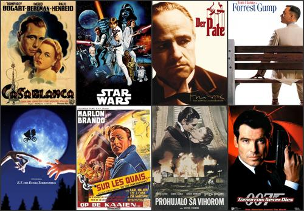
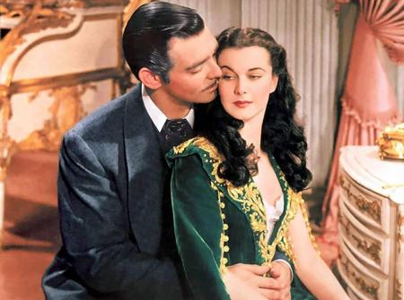
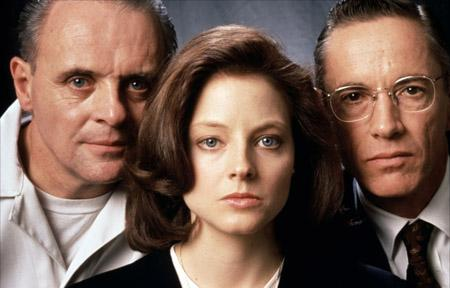
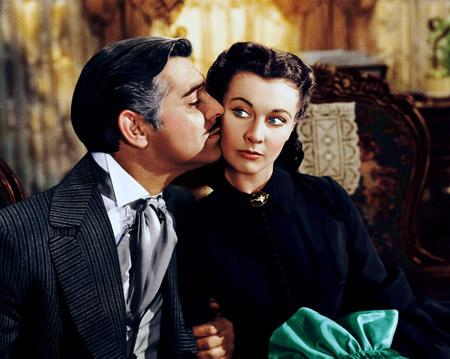
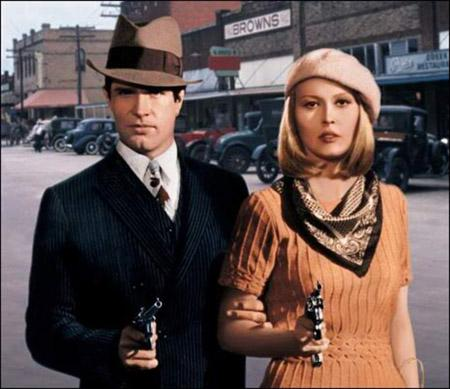
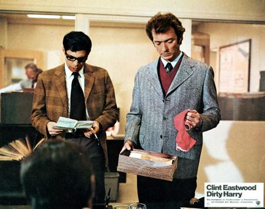
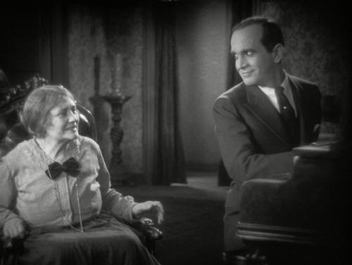
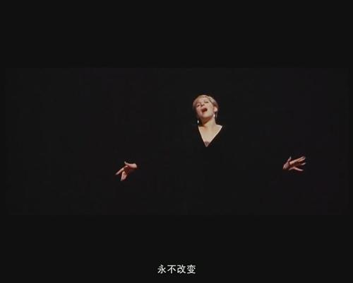
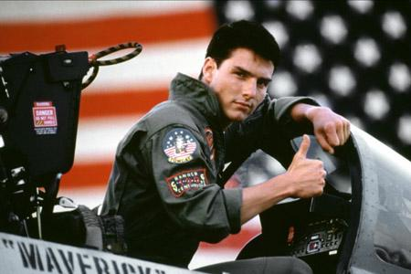

1895年，法国的奥古斯特卢米埃尔和路易卢米埃尔兄弟，在爱迪生的“电影视镜”和他们自己研制的 “连续摄影机”的基础上，研制成功了“活动电影机”。
“活动电影机”有摄影、放映和洗印等三种主要功能。它以每秒16画格的速度拍摄和放映影片，图像清晰稳定。1895年3月22日，他们在巴黎法国科技大会上首放影片《卢米埃尔工厂的大门》获得成功。
同年12月28日，他们在巴黎的卡普辛路14号大咖啡馆里，正式向社会公映了他们自己摄制的一批纪实短片。有《火车到站》、《水浇园丁》、《婴儿的午餐》、《工厂的大门》等12部影片。
卢米埃尔兄弟是第一个利用银幕进行投射式放映电影的人。
史学家们认为，卢米埃尔兄弟的拍摄和放映活动已经脱离了实验阶段，因此，他们把1895年12月28日世界电影首次公映之日即定为电影诞生之时，卢米埃尔兄弟自然当之无愧的成为“电影之父”。
2005年，世界电影诞生100周年。
美国电影协会（AFI）以“纪念电影一百周年”的名义评选出“世界电影史上最伟大的100位电影人”、“世界电影史上100部最佳影片”、“100首电影歌曲”等“100系列排行榜”。AFI百年百大经典电影台词（AFI s 100 Years 100 Movie Quotes）也同属于这个系列。
AFI为推出这个排行榜，还特意于2005年6月21日在CBS电视台播出了同名主题的3小时特别节目，由著名影星皮尔斯?布鲁斯南主持。这100句电影名言由1500个评委在400句候选台词中选出，提名的原则包括某句名言的文化冲击力、它在日常语言中的使用频率以及在提到它所属的那部电影时被引用的频率等。
位居榜首的是《乱世佳人》中的“坦白地说，我不在乎”。
稍稍落后的是马龙?白兰度的两句最著名的台词：《教父》中的“我会给他一个他无法拒绝的条件”；《码头风云》中的“你不理解！我可能有社会地位，我可能成为一个竞选者、我可能已经成了个上等人，而不是一个游民，像现在这副样子。”
排名第四位的是《绿野仙踪》中多罗茜的台词：“托托，我觉得我们已经不在堪萨斯州了。”第五位是《卡萨布兰卡》中亨弗利?鲍嘉对英格丽?褒曼说的那句话：“就看你了，孩子”。虽然这个位置不太显赫，但《卡萨布兰卡》却在100条电影名言中独占了6条。
最早的一句名言是1927年的《爵士歌手》中埃尔?约尔森的那句：“等一分钟，再等一分钟，你现在还听不到任何东西。”（第71位）
而最晚的一句话是《指环王2：双塔奇谋》中“咕噜”的“我的宝贝”。倒数第一位是《泰坦尼克》中莱昂纳多?迪卡普里奥的那句“我是世界之王”。
不过有人不喜欢最后那句，他们说，既然它排在最后，就让我们最后一次听到这句话吧！
LOS ANGELES, California (AP) -- The American Film Institute's list of top 100 quotes from U.S. movies, with film title and year of release:
chosen by leaders of the entertainment community, in a three-hour television event, that aired on the CBS Television Network in June 2005.
| 1 | 1939 | Gone With the Wind | 《乱世佳人》 | Frankly, my dear, I don't give a damn |
| 2 | 1972 | The Godfather | 《教父》 | I'm going to make him an offer he can't refuse |
| 3 | 1954 | On the Waterfront | 《码头风云》 | You don't understand! I coulda had class. I coulda been a contender. I could've been somebody, instead of a bum, which is what I am |
| 4 | 1939 | The Wizard of Oz | 《绿野仙踪》 | Toto, I've got a feeling we're not in Kansas anymore |
| 5 | 1942 | Casablanca | 《卡萨布兰卡》 | Here's looking at you, kid |
| 6 | 1983 | Sudden Impact | 《拨云见日》 | Go ahead, make my day |
| 7 | 1950 | Sunset Blvd | 《日落大道》 | All right, Mr. DeMille, I'm ready for my close-up |
| 8 | 1977 | Star Wars | 《星球大战》 | May the Force be with you |
| 9 | 1950 | All About Eve | 《彗星美人》 | Fasten your seatbelts. It's going to be a bumpy night |
| 10 | 1976 | Taxi Driver | 《出租车司机》 | You talking to me? |
| 11 | 1967 | Cool Hand Luke | 《铁窗喋血》 | What we've got here is failure to communicate |
| 12 | 1979 | Apocalypse Now | 《现代启示录》 | I love the smell of napalm in the morning |
| 13 | 1970 | Love Story | 《爱情故事》 | Love means never having to say you're sorry |
| 14 | 1941 | The Maltese Falcon | 《马耳他猎鹰》 | The stuff that dreams are made of |
| 15 | 1982 | E.T. the Extra-Terrestrial | 《E.T.外星人》 | E.T. phone home. |
| 16 | 1967 | In the Heat of the Night | 《炎热的夜晚》 | They call me Mister Tibbs! |
| 17 | 1941 | Citizen Kane | 《公民凯恩》 | Rosebud. |
| 18 | 1949 | White Heat | 《白热》 | Made it, Ma! Top of the world! |
| 19 | 1976 | Network | 《电视台风云》 | I'm as mad as hell, and I'm not going to take this anymore! |
| 20 | 1942 | Casablanca | 《卡萨布兰卡》 | Louis, I think this is the beginning of a beautiful friendship. |
| 21 | 1991 | The Silence of the Lambs | 《沉默羔羊》 | A census taker once tried to test me. I ate his liver with some fava beans and a nice Chianti. |
| 22 | 1962 | Dr. No | 《007之诺博士（第一部007，肖恩·康纳利）》 | Bond. James Bond. |
| 23 | 1939 | The Wizard of Oz | 《绿野仙踪》 | There's no place like home. |
| 24 | 1950 | Sunset Blvd | 《日落大道》 | I am big! It's the pictures that got small. |
| 25 | 1996 | Jerry Maguire | 《甜心先生》 | Show me the money! |
| 26 | 1933 | She Done Him Wrong | 《侬本多情》 | Why don't you come up sometime and see me? |
| 27 | 1969 | Midnight Cowboy | 《》 | I'm walking here! I'm walking here! |
| 28 | 1942 | Casablanca | 《卡萨布兰卡》 | Play it, Sam. Play 'As Time Goes By. |
| 29 | 1992 | A Few Good Men | 《》 | You can't handle the truth! |
| 30 | 1932 | Grand Hotel | 《》 | I want to be alone. |
| 31 | 1939 | Gone With the Wind | 《乱世佳人》 | After all, tomorrow is another day! |
| 32 | 1942 | Casablanca | 《卡萨布兰卡》 | Round up the usual suspects. |
| 33 | 1989 | When Harry Met Sally | 《当哈瑞遇到萨丽》 | I'll have what she's having. |
| 34 | 1944 | To Have and Have Not | 《逃亡》 | You know how to whistle, don't you, Steve? You just put your lips together and blow. |
| 35 | 1975 | Jaws | 《大白鲨》 | You're gonna need a bigger boat. |
| 36 | 1948 | The Treasure of the Sierra Madre | 《碧血金沙》 | Badges? We ain't got no badges! We don't need no badges! I don't have to show you any stinking badges! |
| 37 | 1984 | The Terminator | 《终结者》 | I'll be back. |
| 38 | 1942 | The Pride of the Yankees | 《扬基的骄傲》 | Today, I consider myself the luckiest man on the face of the earth. |
| 39 | 1989 | Field of Dreams | 《梦幻之地》 | If you build it, he will come. |
| 40 | 1994 | Forrest Gump | 《阿甘正传》 | Mama always said life was like a box of chocolates. You never know what you're gonna get. |
| 41 | 1967 | Bonnie and Clyde | 《邦妮和克莱德》 | We rob banks. |
| 42 | 1967 | The Graduate | 《毕业生》 | Plastics. |
| 43 | 1942 | Casablanca | 《卡萨布兰卡》 | We'll always have Paris. |
| 44 | 1999 | The Sixth Sense | 《灵异第六感》 | I see dead people. |
| 45 | 1951 | A Streetcar Named Desire | 《欲望号街车》 | Stella! Hey, Stella! |
| 46 | 1942 | Now, Voyager | 《扬帆》 | Oh, Jerry, don't let's ask for the moon. We have the stars. |
| 47 | 1953 | Shane | 《原野奇侠》 | Shane. Shane. Come back! |
| 48 | 1959 | Some Like It Hot | 《热情似火》 | Well, nobody's perfect. |
| 49 | 1931 | Frankenstein | 《科学怪人》 | It's alive! It's alive! |
| 50 | 1995 | Apollo 13 | 《阿波罗13号》 | Houston, we have a problem. |
| 51 | 1971 | Dirty Harry | 《辣手神探夺命枪》 | You've got to ask yourself one question: 'Do I feel lucky?' Well, do ya, punk? |
| 52 | 1996 | Jerry Maguire | 《甜心先生》 | You had me at 'hello. |
| 53 | 1930 | Animal Crackers | 《疯狂的动物》 | One morning I shot an elephant in my pajamas. How he got in my pajamas, I don't know. |
| 54 | 1992 | A League of Their Own | 《红粉联盟》 | There's no crying in baseball! |
| 55 | 1977 | Annie Hall | 《安妮·霍尔》 | La-dee-da, la-dee-da. |
| 56 | 1960 | Psycho | 《惊魂记》 | A boy's best friend is his mother. |
| 57 | 1987 | Wall Street | 《华尔街》 | Greed, for lack of a better word, is good. |
| 58 | 1974 | The Godfather Part II | 《教父II》 | Keep your friends close, but your enemies closer. |
| 59 | 1939 | Gone With the Wind | 《乱世佳人》 | As God is my witness, I'll never be hungry again. |
| 60 | 1933 | Sons of the Desert | 《沙漠之子》 | Well, here's another nice mess you've gotten me into! |
| 61 | 1983 | Scarface | 《疤面人》 | Say 'hello' to my little friend! |
| 62 | 1949 | Beyond the Forest | 《越过森林》 | What a dump. |
| 63 | 1967 | The Graduate | 《毕业生》 | Mrs. Robinson, you're trying to seduce me. Aren't you? |
| 64 | 1964 | Dr Strangelove | 《奇爱博士》 | Gentlemen, you can't fight in here! This is the War Room! |
| 65 | 1929 | The Adventures of Sherlock Holmes | 《福尔摩斯冒险史》 | Elementary, my dear Watson. |
| 66 | 1968 | Planet of the Apes | 《人猿世界》 | Get your stinking paws off me, you damned dirty ape. |
| 67 | 1942 | Casablanca | 《卡萨布兰卡》 | Of all the gin joints in all the towns in all the world, she walks into mine. |
| 68 | 1980 | The Shining | 《闪灵》 | Here's Johnny! |
| 69 | 1982 | Poltergeist | 《鬼驱人》 | They're here! |
| 70 | 1976 | Marathon Man | 《霹雳钻》 | Is it safe? |
| 71 | 1927 | The Jazz Singer | 《爵士歌手》 | Wait a minute, wait a minute. You ain't heard nothin' yet! |
| 72 | 1981 | Mommie Dearest | 《亲爱的妈咪》 | No wire hangers, ever! |
| 73 | 1930 | Little Caesar | 《小霸王》 | Mother of mercy, is this the end of Rico? |
| 74 | 1974 | Chinatown | 《唐人街》 | Forget it, Jake, it's Chinatown. |
| 75 | 1951 | A Streetcar Named Desire | 《欲望号街车》 | I have always depended on the kindness of strangers. |
| 76 | 1991 | Terminator 2: Judgment Day | 《终结者 II ：审判日》 | Hasta la vista, baby. |
| 77 | 1973 | Soylent Green | 《超世纪谋杀案》 | Soylent Green is people! |
| 78 | 1968 | 2001: A Space Odyssey | 《2001太空漫游》 | Open the pod bay doors, HAL. |
| 79 | 1980 | Airplane! | 《空前绝后满天飞》 | Striker: "Surely you can't be serious." Rumack: "I am serious ... and don't call me Shirley," |
| 80 | 1976 | Rocky | 《洛奇》 | Yo, Adrian! |
| 81 | 1968 | Funny Girl | 《妙女郎》 | Hello, gorgeous. |
| 82 | 1978 | National Lampoon's Animal House | 《动物屋》 | Toga! Toga! |
| 83 | 1931 | Dracula | 《吸血僵尸惊情四百年》 | Listen to them. Children of the night. What music they make. |
| 84 | 1933 | King Kong | 《金刚》 | Oh, no, it wasn't the airplanes. It was Beauty killed the Beast. |
| 85 | 2002 | The Lord of the Rings: The Two Towers | 《魔戒2：双塔奇兵》 | My precious. |
| 86 | 1975 | Dog Day Afternoon | 《炎热的下午》 | Attica! Attica! |
| 87 | 1933 | 42nd Street | 《第四十二街》 | Sawyer, you're going out a youngster, but you've got to come back a star! |
| 88 | 1981 | On Golden Pond | 《金色池塘》 | Listen to me, mister. You're my knight in shining armor. Don't you forget it. You're going to get back on that horse, and I'm going to be right behind you, holding on tight, and away we're gonna go, go, go! |
| 89 | 1940 | Knute Rockne, All American | 《纽特·罗克尼》 | Tell 'em to go out there with all they got and win just one for the Gipper. |
| 90 | 1964 | Goldfinger | 《金手指》 | A martini. Shaken, not stirred. |
| 91 | 1945 | The Naughty Nineties | 《没规矩的1890年代》 | Who's on first. |
| 92 | 1980 | Caddyshack | 《疯狂高尔夫》 | Cinderella story. Outta nowhere. A former greenskeeper, now, about to become the Masters champion. It looks like a mirac ... It's in the hole! It's in the hole! It's in the hole! |
| 93 | 1958 | Auntie Mame | 《玛咪姑妈》 | Life is a banquet, and most poor suckers are starving to death! |
| 94 | 1986 | Top Gun | 《壮志凌云》 | I feel the need -- the need for speed! |
| 95 | 1989 | Dead Poets Society | 《春风化雨》 | Carpe diem. Seize the day, boys. Make your lives extraordinary. |
| 96 | 1987 | Moonstruck | 《月色撩人》 | Snap out of it! |
| 97 | 1942 | Yankee Doodle Dandy | 《胜利之歌》 | My mother thanks you. My father thanks you. My sister thanks you. And I thank you. |
| 98 | 1987 | Dirty Dancing | 《辣身舞》 | Nobody puts Baby in a corner. |
| 99 | 1939 | The Wizard of Oz | 《绿野仙踪》 | I'll get you, my pretty, and your little dog, too! |
| 100 | 1997 | Titanic | 《泰坦尼克》 | I'm king of the world! |
【1-10】
1. Frankly, my dear, I don't give a damn.
“坦白地说，亲爱的，我不在乎。”
-- -乱世佳人（Gone with the Wind, 1939）
演员：克拉克.盖博（饰瑞特.巴特勒）
影片结尾，瑞特决意离开，斯嘉丽苦苦哀求：“你要是走了，我该去哪里？我该怎么办？”瑞特冷冷地扔下这句话扬长而去。
当年本片制片人由于这句粗话而被罚款5000美元。而现在，一部电影中如果没有damn, shit, fxxk等词汇，简直都不好意思说自己是好莱坞电影。
如果考虑货币贬值因素，本片是有史以来票房最高的影片，即便是《泰坦尼克》也无法与之相比。
2. I'm going to make him an offer he can't refuse.
“我会开出一个他无法拒绝的条件。”
-- 教父（The Godfather, 1972）
演员：马龙.白兰度（饰维托.唐.克莱昂）
影片开头，庄尼到教父家中求助，希望帮他成为一部电影的主演。教父非常自信地用这句话安慰庄尼，叫他放心。影片后期迈克尔接管家族事务后，在处理拉斯维加斯赌场事务时也引用了父亲的这句话，表明他已成长为新一代教父。
3. You don't understand! I coulda had class. I coulda been a contender. I could've been somebody, instead of a bum, which is what I am.
你不明白！我本可以进入上流社会。我本可以成为一个上进的人。我本可以当个有脸面的人物，而不是像现在这样当个小混混。
-- 码头风云（On the Waterfront, 1954）
演员：马龙.白兰度（饰泰瑞）
哥哥劝说泰瑞向工会头目屈服，泰瑞愤怒地指责哥哥当初命令他在拳击比赛中放水，使他成为一个一事无成的小混混。
在《愤怒的公牛》中，罗伯特德尼罗饰演的退役拳手杰克拉莫塔对着镜子引用了这段台词。
4. Toto, I've got a feeling we're not in Kansas anymore.
托托，我感觉我们已经不在堪萨斯了。”
-- 绿野仙踪（The Wizard of OZ, 1939）
演员：朱迪.嘉兰（饰多萝西）
多萝西初到OZ国的第一句话。影片中在堪萨斯的画面都是黑白的，到OZ国之后转为彩色。
本片在影史上具有极其重要的地位，被美国电影协会评为十大幻想片第一位。
5. Here's looking at you, kid.
“这就看你的了，宝贝。”
-- 卡萨布兰卡（Casablanca, 1942）
演员：亨弗莱.鲍嘉（饰瑞克）
这是瑞克跟伊尔莎在一起时常说的一句话，在影片中出现了4次，分别是巴黎相识、车站离别、酒吧重聚、机场告别这4个重要时刻。这句台词并非出自原始剧本，而是拍摄间隙亨弗莱.鲍嘉教英格丽.褒曼打牌时常说的一句话。要打动女孩的芳心，这样一句情话是必不可少的，而且要经常对她说，这样才能让她记住你一辈子。
6. Go ahead, make my day.
“继续啊，让我高兴高兴。”
-- 拨云见日（Sudden Impact, 1983）
演员：克林特.伊斯特伍德（饰哈利.卡拉汉）
卡拉汉警官面对餐厅里劫持人质的歹徒，冷冰冰地说了这么一句话。结果歹徒慑于他的气势，乖乖的放下了手中的枪。
《拨云见日》是《警探哈利》系列的第四集。该系列的主角卡拉汉警官是一位行事乖张不受法律的条条框框约束的新派警察。
7. All right, Mr. DeMille, I'm ready for my close-up.
“好了，德米尔先生，我已经准备好拍特写了。”
-- 日落大道（Sunset Blvd., 1950）
演员：格洛丽亚.斯文森（饰诺玛.戴斯蒙德）
影片结尾，精神完全失常的诺玛枪杀年轻的情人之后，面对蜂拥而至的警察和记者，她以为自己又开始拍电影了。
值得一提的是，在这部以好莱坞为背景的影片中，几乎所有角色都与演员现实中的情况吻合。电影中男主角是个不得志的编剧，而演员威廉霍登当时是一位不得志的演员；女主角诺玛是过气女明星，她的仆人兼前夫是位导演，现实中他们正是一对有过合作的演员和导演；诺玛的老朋友德米勒，现实中就是一位著名导演，作品有第25届奥斯卡最佳影片《戏王之王》和著名的《十诫》；另外影片中跟诺玛一起打牌的老朋友也都是由当时好莱坞的著名人士客串的。
8. May the Force be with you.
“愿原力与你同在。”
-- 星球大战（Star Wars, 1977）
演员：哈里森.福特（饰汉.索罗）
星球大战的标志性台词，出现在此后的每一部续集中。
9. Fasten your seatbelts. It s going to be a bumpy night.
“系好你们的安全带。这将是一个颠簸的夜晚。”
-- 彗星美人（All About Eve, 1950）
演员：贝蒂.戴维斯（饰玛戈）
玛戈是位性格直率脾气暴躁的女明星（贝蒂戴维斯的本色演出）。在一次聚会上，与会的嘉宾各怀心事，而心直口快的玛戈则毫无顾忌地说了出来。
10. You talking to me?
“你在跟我说话？”
-- 出租车司机（Taxi Driver, 1976）
演员：罗伯特.德.尼罗（饰特拉维斯）
特拉维斯是一位越战退伍军人，渴望与周围的人沟通。影片中他对着镜子反复练习拔枪的动作，幻想自己是个大人物。
当时年仅15岁的朱迪.福斯特在本片中饰演一个雏妓。1981年她的一位疯狂影迷欣克利为了引起她的注意，模仿影片中的情节行刺了当时的总统里根。
【11-20】
11. What we've got here is failure to communicate.
“我们完全无法沟通。”
-- 铁窗喋血（Cool Hand Luke, 1967）
演员：Strother Martin（饰监狱长），保罗.纽曼（饰卢克）
卢克第一次逃跑被抓回来后，监狱长警告其他犯人不要逃跑，便以这句台词作为他的开场白。影片结尾卢克被包围时重复了这句台词。这句话现在仍经常用来表示对态度强硬的对手的拒绝，而且通常模仿影片中的监狱长以懒洋洋的南方口音说出。
12. I love the smell of napalm in the morning.
“我喜欢早晨汽油弹的味道。”
-- 现代启示录（Apocalypse Now, 1979）
演员：罗伯特.杜瓦尔（饰Kilgore中校）
中校下令用飞机投掷汽油弹烧掉森林，只是为了压制越共的火力让他冲浪。说这句话的时候，他正悠闲地坐在枪林弹雨的战场上。
13. Love means never having to say you're sorry.
“爱意味着永远不必说抱歉。”
-- 爱情故事（Love Story, 1970）
演员：AlI'macGraw（饰Jennifer Cavalleri），Ryan O Neal（饰Oliver Barrett IV）
影片中男女主角先后都说过这句台词。这句台词后来被许多影视作品所引用。
14. The stuff that dreams are made of.
“用来制造梦想的材料。”
-- 马耳他之鹰（The Maltese Falcon, 1941）
演员：亨弗莱.鲍嘉（山姆.斯贝德）
山姆.斯贝德是一位私家侦探，受一位贵妇的委托寻找她失踪的妹妹。结果随着调查的深入，案件牵扯到了好几伙人对一件宝物（马耳他之鹰）的争夺，许多人为此丧命。影片结尾，一个警察问山姆马耳他之鹰是用什么材料制成的，山姆意味深长地用这句话作为回答。
15. E.T. phone home.
“E.T.打电话回家。”
-- 外星人ET（E.T. The Extra-Terrestrial）
演员（配音）：Pat Welsh（E.T.)
这是E.T.学会的第一句话，也是E.T.复活后说的第一句话。20周年纪念版中，在E.T说出”E.T. phone home”的段落中，使用了计算机技术使得E.T.的嘴唇动作与台词相符。
16. They call me Mister Tibbs!
“他们叫我提布斯先生！”
-- 炎热的夜晚（In the Heat of the Night, 1967）
演员：西德尼.波蒂埃（饰维吉尔.提布斯）
提布斯是一位黑人警探，在一次去外地执行公务的时候被当地警察误认为杀人犯而被逮捕。在受到白人警长用轻蔑的语气讯问时，提波斯义正辞严地用这句话捍卫黑人的尊严。西德尼.波蒂埃后来还主演了本片的续集，标题就是这句台词。
西德尼.波蒂埃是第一位黑人奥斯卡影帝，他拍摄过许多反映种族歧视问题的影片。本片中他掌掴白人的镜头，以及在《猜猜谁来吃晚餐》中与白人女性接吻的镜头，都在当时引起了很大反响。
17. Rosebud.
“玫瑰花蕾。”
-- 公民凯恩（Citizen Kane, 1941）
演员：奥森.威尔斯（饰查尔斯.福斯特.凯恩）
这是主角凯恩临终前的遗言，也是贯穿整部影片的线索。记者就是为了弄清楚这个词的含义而逐个采访凯恩身边的人，从而如同“剥洋葱”一般将凯恩的形象逐步呈现在观众面前。影片结尾为观众揭开了谜底，这个词原来是刻在凯恩儿时雪橇上的，凯恩临终前念念不忘的其实是儿时的天真。
影片中凯恩的原形是当时的报业大王赫斯特，而“Rosebud”据传是赫斯特对他情妇身上某一最隐私部位的昵称。
18. Made it, Ma! Top of the world!
“成功了，妈妈！世界之巅！”
-- 白热杀机（White Heat, 1949）
演员：詹姆斯.卡格尼（饰亚瑟.科迪.贾瑞特）
科迪是一个心狠手辣胆大包天的黑帮头目，但他却对自己的母亲敬若神明。“to the top of the world”是母亲对他常说的一句话。影片结尾，科迪被警察团团包围，在走投无路的情况下，他高呼这句台词举枪引爆了脚下的油罐。
19. I'm as mad as hell, and I'm not going to take this anymore!
“我彻底疯了，我再也不能忍受下去了。”
-- 电视台风云（Network, 1976）
演员：彼得.芬奇（饰霍华德.比尔）
比尔是电视台资深主持人，得知自己即将被解雇后，在直播节目中发泄不满。没想到观众反应出奇的好，于是电视台重新让他主持节目。比尔在节目中的标志性动作就是高呼这句台词，然后倒在地上装死。后来在一次影片的宣传活动中他因心脏病突发过世，使他成为第一位在死后获得奥斯卡奖的演员（另一位是希斯莱杰）。
20. Louis, I think this is the beginning of a beautiful friendship.
“路易斯，我想这是一段美好友谊的开端。”
-- 卡萨布兰卡（Casablanca, 1942）
演员：亨弗莱.鲍嘉（饰瑞克）
影片的最后一句台词。警长路易斯在瑞克的影响下决定不再当德国人的走狗。

【21-30】
21. A census taker once tried to test me. I ate his liver with some fava beans and a nice Chianti.
“一个户籍调查员曾试图测试我。我把他的肝就着蚕豆和红葡萄酒吃了。”
--沉默的羔羊（The Silence of the Lamb, 1991）
演员：安东尼.霍普金斯（汉尼拔.莱克特）
汉尼拔以平静的口吻说出这句台词，令观众毛骨悚然。
本片是奥斯卡历史上仅有的3部获得“大满贯”（最佳影片，最佳导演，最佳编剧，最佳男女主角）的影片之一，而安东尼.霍普金斯也成为出场时间最短的奥斯卡影帝。
22. Bond. James Bond.
“邦德，詹姆斯?邦德。”
-- 诺博士（Dr. No, 1962）
演员：肖恩.康纳利（饰詹姆斯.邦德）
007的标志性台词。
23. There's no place like home.
“什么地方都不如家好。”
-- 绿野仙踪（The Wizard of OZ, 1939）
演员：朱迪.嘉兰（饰多萝西）
这是北方女巫送多萝西回家时念的咒语，之后昏迷中的多萝西喃喃地念着这句话睁开了眼睛。
24. I am big! It s the pictures that got small.
“我现在还是大明星！是默片没落了。”
-- 日落大道（Sunset Blvd., 1950）
演员：格洛丽亚.斯文森（饰诺玛.戴斯蒙德）
为躲避警察而闯进诺玛家里的失意编剧乔认出诺玛是以前的默片明星，诺玛反驳说她现在还是大明星，没落的是电影本身。这句台词将诺玛狂妄自大的性格表现得淋漓尽致。
25. Show me the money!
“拿钱给我看！”
-- 征服情海（Jerry Maguire, 1996）
演员：小库巴.古丁（饰罗德.泰德威尔）
被公司解雇的体育经纪人杰瑞.马圭尔拼命打电话试图留住自己的客户，啰嗦的橄榄球运动员罗德提出的条件是杰瑞必须“让他看到钱”。这句话后来变得非常流行，著名的电脑游戏《星际争霸》中加钱的秘籍就是这句台词。
26. Why don't you come up sometime and see me?
“你干嘛不常来看看我呢？”
-- 侬本多情（She Done Him Wrong, 1933）
演员：梅.威斯特（露夫人）
露夫人是一家夜总会的老板，生性风骚，喜欢周旋在许多情人之间。影片中当她看到年轻英俊的萨吉时便用这句台词跟他调情。这句台词还出现在她的其他一些电影中。
梅.威斯特（1893-1980）是上个世纪30年代美国著名的女演员、歌手和剧作家。她是好莱坞第一个性感女明星，以提倡性解放而著称，曾因为猥亵罪被判入狱十天。她也是美国第一个有关变性人的剧本的作者，同性恋角色第一次登上美国戏剧舞台也是在她的作品里。毫不夸张地说，她就是30年代的麦当娜。她的许多话，今天看来依然有点惊世骇俗。
本片上映半年后美国国家道德审查会就成立了，根据官方的说法，梅.威斯特和她的这部电影是该组织成立的主要原因之一。
27. I'm walking here! I'm walking here!
我正在这走呢，我正在这走呢！”
-- 午夜牛郎（Midnight Cowboy, 1969
演员：达斯丁.霍夫曼（饰”Ratso” Rizzo）
Ratso是个街头骗子，影片中有个镜头是他和另一位男主角乔一起过马路，差点被一辆计程车撞到。这个镜头据说是即兴发挥的，达斯丁.霍夫曼说他本来想说的是：“我们这里在拍电影。”结果说出来的却是现在这句著名的台词。
28. Play it, Sam. Play As Time Goes By.
“弹吧，山姆。弹 时光飞逝 。”
-- 卡萨布兰卡（Casablanca, 1942）
演员：英格丽.褒曼（饰伊尔莎）
伊尔莎和丈夫一起走进瑞克的酒吧，当她认出山姆后，便请他弹这首以前和瑞克在一起时经常听他弹奏的曲子。
29. You can't handle the truth!
“你担当不起真相！”
-- 好人寥寥（A Few Good Men, 1992）
演员：杰克.尼科尔森（饰内森.杰萨普上校）
律师丹尼尔（汤姆.克鲁斯饰）为两名涉嫌杀害战友的海军陆战队士兵辩护。在法庭上，丹尼尔要求上校说出真相，狂妄的上校冲着丹尼尔大喊：“你担当不起真相！”。
30. I want to be alone.
“我想一个人呆着。”
-- 大饭店（Grand Hotel, 1932）
演员：葛丽泰.嘉宝（饰格鲁辛斯卡娅）
演员格鲁辛斯卡娅由于观众反应平淡而心灰意冷，不愿意再去剧院。这句著名台词可以说是葛丽泰.嘉宝的个人宣言。她在年仅36岁事业如日中天时突然宣布息影，并一个人隐居在纽约的公寓中，与电视机为伴，不接受采访，也不接受任何人的求婚，独自一人终老。因此包括她的好友在内的很多人都怀疑她是同性恋。

【31-40】
31. After all, tomorrow is another day!
“毕竟，明天又是新的一天！”
-- 乱世佳人（Gone with the Wind, 1939）
演员：费雯丽（饰斯嘉丽.奥哈拉）
被丈夫瑞特抛弃的斯嘉丽瘫倒在楼梯上伤心欲绝。但是一想到故乡塔拉，她的脸上又充满了希望。
32. Round up the usual suspects.
“围捕嫌犯。”
-- 卡萨布兰卡（Casablanca, 1942）
演员：克劳德.瑞恩斯（饰雷诺警长）
影片结尾，瑞克枪杀德国军官后束手待毙。面对闻讯赶来的部下，雷诺警长出人意料地命令他们搜捕嫌犯，放过了瑞克。
33. I ll have what she s having.
“给我来份和她一样的。”
-- 当哈利遇到莎莉（When Harry Met Sally, 1989）
演员：埃斯特尔.瑞纳（饰餐厅顾客）
梅格.瑞恩饰演的女主角莎莉和男主角哈利一起在餐厅用餐。两人谈起性爱话题，为了反驳哈利，莎莉在餐厅里当众开始假装性高潮。旁边一桌上的女顾客见状立即叫来侍者：“给我来份和她一样的。”顺便一提，这位女顾客的扮演者是导演的母亲。
34. You know how to whistle, don't you, Steve? You just put your lips together and blow.
“你知道怎么吹口哨，是吗，斯蒂夫？只要把嘴唇闭上然后吹气就行了。”
-- 逃亡（To Have and Have Not, 1944）
演员：劳伦.巴考尔（饰玛丽.布朗宁）
这句台词是女主角劳伦.巴考对亨弗莱.鲍嘉说的。两人在影片摄制过程中坠入爱河，后来成为夫妻。后来在亨弗莱.鲍嘉的葬礼上，劳伦.巴考在他的棺材里放了一只口哨，以纪念两人在本片中的相识。
按照原始剧本，劳伦.巴考的戏份并不多，女主角其实应该是扮演自由法国组织成员的Dolores Moran。借助与亨弗莱.鲍嘉的恋情，剧组增加了劳伦.巴考的戏份，把她提升为女主角。Moran与本片导演霍华德.霍克之间也有绯闻，从第一女主角降格为女配角对她来说这真是件很郁闷的事。不过如果按照原著进行拍摄的话，剧情与卡萨布兰卡就太过雷同了。本片的两位编剧（欧内斯特.海明威和威廉.福克纳）都是诺贝尔文学奖获得者，导演在拍摄时居然对剧本大肆窜改，不知两人作何感想。
35. You're gonna need a bigger boat.
“你需要一艘更大的船。
-- 大白鲨（Jaws, 1975）
演员：罗伊.施耐德（饰布罗迪警长）
站在甲板上的警长看到大白鲨，吓得退回船舱，对同伴说：“你需要一艘更大的船。”
36. Badges? We ain t got no badges! We don't need no badges! I don't have to show you any stinking badges!
“警徽？我们没有警徽！我们不需要警徽！我用不着给你看什么臭警徽！”
-- 碧血金砂（The Treasure of the Sierra Madre, 1948）
演员：阿方索.贝多亚（饰墨西哥匪首）
三个淘金者在深山里遭遇了一群墨西哥匪徒，匪首想冒充墨西哥警察，亨弗莱.鲍嘉饰演的弗瑞德要求他出示警徽，于是对方恼羞成怒。
37. I ll be back.
“我会回来的。”
-- 终结者（The Terminator, 1984）
演员:阿诺德.施瓦辛格（饰T800）
这句台词出现在T800被拒绝进入警察局时，随后他开着卡车冲进了警局。这也是州长的标志性台词，在他后来的许多影片中都曾出现过，包括《独闯龙潭》、《全面回忆》、《第六日》、《终结者2》等。
38. Today, I consider myself the luckiest man on the face of the earth.
“今天，我认为自己是地球表面最幸运的人。”
-- 扬基的骄傲（The Pride of the Yankees, 1942）
演员：加里.库柏（饰鲁.盖瑞）
本片是纽约洋基队传奇巨星鲁.盖瑞的传记片，这句台词出自他退役前在洋基体育场的著名演讲。鲁.盖瑞曾连续参加2130场比赛，并创造过单场4次全垒打的记录。1939年，年仅37岁的他死于以他名字命名的鲁盖瑞氏症。本片在他死后17个月上映，影片中许多演员是当时洋基队的现役球员，包括著名的贝比.鲁斯。
39. If you build it, he will come.
“你建好了，他就会来。”
-- 梦幻之地（Field of Dreams, 1989）
演员：瑞.利奥塔（饰“光脚”乔.杰克逊）
主角瑞（凯文.科斯特纳饰）的父亲是个棒球运动员，瑞少年时便与父亲失和。成年后的瑞带着老婆孩子到乡下经营农场。有一天他在麦田里听到有个神秘的声音说“你建成了他就会来。”于是他不顾别人的反对，决定在自己的玉米田里建造一个棒球场。后来他的偶像“光脚乔”带许多著名球员过来打球，还让他见到了自己的父亲，两人多年的心结得以解开。
40. Mama always said life was like a box of chocolates. You never know what you're gonna get.
“妈妈总是说，生活就像一盒巧克力，你永远不知道你会得到什么。”
-- 阿甘正传（Forrest Gump, 1994）
演员：汤姆.汉克斯（弗瑞斯特.甘）
未来是不确定的，永远不要放弃对生活的希望。

【41-50】
41. We rob banks.
“我们是抢银行的。”
-- 雌雄大盗（Bonnie and Clyde, 1967）
演员：沃伦.比蒂（饰克莱德.巴罗），费.唐娜薇（饰邦尼.帕克）
邦尼和克莱德在一间无人的农家屋内过夜。第二天醒来见到房子的主人，得知房子被抵押给银行，由于还不出钱，已被银行没收。克莱德便把枪借给他，让他射击银行的告示牌泄愤。当克莱德被问起从事的职业时，他微笑着回答：“我们是抢银行的。”邦尼非常崇拜克莱德的肆无忌惮，后来她在邀新伙伴加入时也说了这句话。
42. Plastics.
“橡胶业。”
-- 毕业生（The Graduate, 1967）
演员：沃特.布鲁克（饰马圭尔先生）
在为本举行的庆祝宴会上，父亲的合伙人马圭尔先生特意把本叫到一边，郑重地建议他从事塑胶业。在本片上映后的一年间，塑胶制造业非常兴旺，不少人认为与这句台词有关。
43. We ll always have Paris.
“我们将永远拥有巴黎（的美好时光）”
-- 卡萨布兰卡（Casablanca, 1942）
演员：亨弗莱.鲍嘉（饰瑞克）
瑞克在机场与伊尔莎依依惜别，用这句话安慰伊尔莎。如果你与情人分手时不知道该说什么，就用这句话吧。
44. I see dead people.
“我能看见死人。”
-- 第六感（The Sixth Sense, 1999）
演员：哈利.乔.奥斯蒙特（饰科尔.希尔）
科尔对克罗医生（布鲁斯.威利斯饰）说过这句话，后者却不以为意。影片接近尾声时，医生终于明白了这句话的含义。
这部成本4千万美元的电影全球票房超过6亿，出人意料的结局是其成功的关键。
45. Stella! Hey, Stella!
“斯黛拉！嗨，斯黛拉！”
-- 欲望号街车（A Streetcar Named Desire, 1951）
演员：马龙.白兰度（饰斯丹利.柯瓦斯基）
性格暴躁的斯丹利经常对斯黛拉发火，每次斯黛拉都原谅了他。影片结尾斯丹利逼走布兰琪之后，斯黛拉不顾丈夫绝望的呐喊，决意抱着刚出生的婴儿永远离开。
马龙.白兰度在本片中的表演非常杰出，可以说开创了现代“生活化”表演的先河
在此之前的表演都类似于舞台表演，演员们竭力保持自己的“绅士”或“淑女”形象。本片获得了奥斯卡4项表演奖中的3项，唯独最被大家看好的马龙.白兰度在影帝的争夺中惜败给了亨弗莱.鲍嘉（非洲女王号）。这也是后者唯一的一个影帝称号，多少有点照顾的成分--对于这位最伟大的男演员来说，一个奥斯卡奖都没有的话也太说不过去了。
46. Oh, Jerry, don't let s ask for the moon. We have the stars.
“哦，杰瑞，不用追寻月亮。我们已经有星星了。”
-- 扬帆（Now, Voyager, 1942）
演员：贝蒂.戴维斯（饰夏洛特.威尔）
夏洛特和有妇之夫杰瑞互相倾心却无法结合。杰瑞问她是否感到快乐，夏洛特用这句话作为回答。其含义类似于“不求天长地久，但求曾经拥有。”
47. Shane. Shane. Come back!
“谢恩，谢恩，回来吧！”
-- 原野奇侠（Shane, 1953）
演员：布兰登.德.瓦尔德（饰乔伊.斯塔瑞）
Shane帮助斯塔瑞一家消灭了小镇上的恶势力，当他离开小镇时，小男孩在他身后大声呼唤他回来。Shane是著名的西部英雄形象。
48. Well, nobody s perfect.
“人无完人。”
-- 热情似火（Some Like It Hot, 1959）
演员：乔.E.布朗（饰奥斯古德.菲尔丁三世）
富翁奥斯古德.菲尔丁被男扮女装的主角杰瑞（杰克.莱蒙饰）迷得神魂颠倒。影片最后，杰瑞扯掉假发告诉他自己是男人，结果富翁不以为然地说：“人无完人嘛。”
49. It s alive! It s alive!
“它还活着！它还活着！”
-- 科学怪人（Frankenstein, 1931）
演员：柯林.克利夫（饰亨利.弗兰肯斯坦）
科学家弗兰肯斯坦博士制作了一个没有生命的人体，一道闪电过后，它并没有变成博士理想中的“完人”，而是变成了一个相貌丑陋的怪物。怪物将弗兰肯斯坦博士当作自己的爸爸，但后者却将其赶出了家门。
本片根据玛丽.雪莱的同名小说改编。玛丽.雪莱是著名诗人雪莱的夫人，她这部写于1818年的小说是世界上第一部科幻小说。后来还有多部续集，如《弗兰肯斯坦的新娘》（1935）、《年轻的弗兰肯斯坦》（1974）等，评价均很高。
50. Houston, we have a problem.
“休斯顿，我们有问题了。”
-- 阿波罗13号（Apollo 13, 1995）
演员：汤姆.汉克斯（饰吉姆.洛威尔）
宇航员吉姆.洛威尔向地面控制中心汇报故障情况。在网上可以找到当年的通讯录音，原话是“Houston, we've had a problem.”。这句台词后来变得非常流行，在告诉别人某个严重问题时，经常以这句话作为开场白，以达到一种轻松诙谐的效果。

【51-60】
51. You've got to ask yourself one question: Do I feel lucky? Well, do ya, punk?
“你应该问自己一个问题： 我感到幸运吗？ 你觉得呢，痞子？”
-- 警探哈利（Dirty Harry, 1971）
演员：克林特.伊斯特伍德（饰哈利.卡拉汉）
卡拉汉警官在追捕罪犯时有自己独特的方法，完全无视法律的束缚。这是当他用枪指着罪犯时常说的话。
本片中连环杀手的原形是著名的十二宫杀手，饰演杀手的演员安迪.罗宾逊表演非常完美，以至于在影片上映后不断收到骚扰电话和信件。在大卫.芬奇导演的《十二宫杀手》中出现过本片的镜头。
52. You had me at “hello.”
“从相遇的那一刻起你就已经征服了我。”
-- 征服情海（Jerry Maguire, 1996）
演员：蕾妮.齐薇格（饰多萝西）
主角杰瑞（汤姆.克鲁斯饰）赶到多萝西家里向她表明心迹，多萝西让他不要再说下去，因为“从相遇的那一刻起你就已经征服了我。”
53. One morning I shot an elephant in my pajamas. How he got in my pajamas, I don't know.
“一天早上我在我的睡衣里打死一只大象，他怎么跑到我睡衣里来的，我就不知道了。”
-- 疯狂的动物（Animal Crackers, 1930）
演员：格劳乔?马克斯
54. There's no crying in baseball!
“棒球运动里没有哭泣！”
-- 女子棒球队（A League of Their Own, 1992）
演员：汤姆.汉克斯（饰吉米.都根）
二战期间，美国职业棒球大联盟暂停，棒球大王沃尔特?哈维决定组建女子棒球联合会，本片讲述的就是第一批女子棒球运动员的故事。影片中一位女球员受到教练吉米的责骂后哭了出来，吉米朝她大吼：“棒球运动里没有哭泣！”
顺便提一下，麦当娜也参演了本片，而且戏份不小。她还演唱了影片的片尾曲《This used to be my playground》。
55. La-dee-da, la-dee-da.
“啦嘀嗒，啦嘀嗒。”
-- 安妮.霍尔（Annie Hall, 1977）
演员：戴安.基顿（饰安妮.霍尔）
这句台词是安妮.霍尔的口头禅，每当她感到尴尬的时候就会用“La-dee-da”自嘲。本片拍摄时伍迪.艾伦和黛安.基顿是情人，黛安.基顿的真名是黛安.霍尔，安妮是她的昵称。本片的叙事结构很有特点，观众仿佛进入了主角的思想，想到哪里是哪里。
56.A boy s best friend is his mother.
“男孩最好的朋友是他的母亲。”
-- 惊魂记（Psycho, 1960）
演员：安东尼.博金斯（饰诺曼.贝茨）
旅馆主人诺曼与女住客聊天时不经意地说了这句话。看完全片再回想起这句话，不禁令人毛骨悚然。
本片是希区柯克最著名的作品之一，现代恐怖惊悚片的鼻祖。
57. Greed, for lack of a better word, is good.
“贪婪，找不到比这更好的词了，是件好事。”
-- 华尔街（Wall Street, 1987）
演员：迈克尔.道格拉斯（饰戈顿.盖葛）
盖葛是华尔街的金融巨头，这句台词出自他在股东大会上极富煽动性的演讲。
58. Keep your friends close, but your enemies closer.
“知己知彼，百战不殆。”
-- 教父2（The Godfather, 1974）
演员：阿尔.帕西诺（饰迈克尔.克莱昂）
《教父》中类似的经典台词还有很多，充满着智慧，宛如一部现代《孙子兵法》。汤姆.汉克斯在电影《电子情书》中曾说：“教父是男人的圣经，那里面包含了男人所有的智慧。”
59. As God is my witness, I ll never be hungry again.
“上帝为证，我再也不会挨饿。”
-- 乱世佳人（Gone with the Wind, 1939）
演员：费雯丽（饰斯嘉丽.奥哈拉）
斯嘉丽回到塔拉，母亲已经去世，父亲也因受到刺激而精神恍惚，重建家园的重担落到了她一个人的肩上。这句话是她从任性骄纵富家千金到不择手段的坚强女性的转变。
60. Well, here's another nice mess you've gotten me into!
“哦，你又给我惹了好大一个麻烦！”
-- 沙漠之子（Sons of the Desert, 1933）
演员：奥利弗.哈迪（饰奥利弗）

【61-70】
61. Say “hello” to my little friend!
“向我的小朋友打个招呼吧！”
-- 疤面煞星（Scarface, 1983）
演员：阿尔.帕西诺（饰托尼.蒙塔拿）
托尼在家中遭到对手的围攻，他独自一人与敌人火拼。“my little friend”指的是他那把装有榴弹发射器的M16突击步枪。
62. What a dump.
“简直就是个垃圾堆。”
-- 越过森林（Beyond the Forest, 1949）
演员：贝蒂.戴维斯（饰罗莎.莫林）
罗莎用这句话形容自己的家。这也许是贝蒂.戴维斯最失败的一部电影，口碑极差，拍完本片后她就与华纳解约了。1962年的影片《谁害怕维吉尼亚.沃尔夫》中，伊丽莎白.泰勒也引用了这句话，并询问丈夫出自贝蒂.戴维斯的哪部电影。此后这句台词才被广为流传。
63. Mrs. Robinson, you're trying to seduce me. Aren t you?
“罗宾逊夫人，你在勾引我，是吗？”
-- 毕业生（The Graduate, 1967）
演员：达斯丁.霍夫曼（饰本杰明.布拉多克）
罗宾逊.夫人是本的父亲的生意合伙人的老婆，在庆祝本大学毕业的宴会上，要求本送她回家。一到自己家中，罗宾逊夫人便迫不及待地开始勾引本。这个镜头被用作为本片的宣传海报。
64. Gentlemen, you can't fight in here! This is the War Room!
“先生们，你们不能在这里打架！这是作战室！”
-- 奇爱博士（Dr. Stangelove, 1964）
演员：彼得.塞勒斯（饰总统）
总统请俄罗斯大使到作战会议室一起讨论当前的紧急形势。结果大使趁机用袖珍照相机大拍特拍，被巴克将军识破后两人扭打起来。总统一脸严肃地命令他们停止打架，他当时所说的这句台词充满了讽刺意味。
65. Elementary, my dear Watson.
“再简单不过了，亲爱的华生。”
-- 福尔摩斯历险记（The Adventures of Sherlock Holmes, 1929）
演员：巴兹尔.拉斯伯恩（饰歇洛克.福尔摩斯）
这句台词是福尔摩斯向华生分析案情时的口头禅，出现在此后的每一集福尔摩斯系列电影中。
66. Get your stinking paws off me, you damned dirty ape.
“放开你的臭爪子，你这该死的脏猩猩。”
-- 人猿星球（Planet of the Apes, 1968）
演员：查尔顿.赫斯顿（饰乔治.泰勒）
从地球出发的飞船经过漫长的星际旅行，降落在一个由人猿所主宰的星球上。宇航员泰勒被猿人抓获，当他恼怒地喊出这句话时，一直以为他不会说话的人猿们感到非常震惊。
67. Of all the gin joints in all the towns in all the world, she walks into mine.
“世界上有那么多小镇，那么多酒吧，她偏偏走进了我这家。”
-- 卡萨布兰卡（Casablanca, 1942）
演员：亨弗莱.鲍嘉（饰瑞克）
遇到久别重逢的伊尔莎后，瑞克在自己的酒吧里喝闷酒。
68. Here's Johnny!
“强尼在这里！”
-- 闪灵（The Shining, 1980）
演员：杰克.尼科尔森（饰杰克.托伦斯）
显露狂态的杰克追赶妻子试图杀她，妻子逃进卫生间。杰克用消防斧在门上劈开一个大洞，探头进来面目狰狞地恐吓妻子。这个镜头被用作电影的海报。
69.They're here!
“他们来了！”
-- 鬼驱人（Poltergeist, 1982）
演员：海瑟.奥鲁克（饰卡罗尔.安.弗利林）
小女儿对着闪烁着雪花信号的电视机发呆，似乎能听到电视机里有人在说话，然后回过头对家人说了这句话。
饰演大女儿的多米尼克.邓恩在影片上映当年被男友谋杀，而饰演小女儿的海瑟.奥鲁克6年后也病死了，两人被葬在同一个公墓。这为该系列影片凭添了许多诡异气氛，许多人说这是一部被诅咒的电影。
70. Is it safe?
“它安全吗？”
-- 霹雳钻（Marathon Man, 1976）
演员：劳伦斯.奥利弗（饰克里斯蒂安.蔡尔医生）
大学生托马斯（达斯丁.霍夫曼饰）在和女友一起散步时遭到袭击，他请哥哥过来帮忙调查，结果哥哥却被暗杀，他也被神秘人物所绑架并遭到严刑拷问，整个过程中对方只是反复询问他一个古怪的问题：“它安全吗？”

【71-80】
71. Wait a minute, wait a minute. You ain t heard nothin yet!
“等一下，等一下。你还什么都没听到！”
-- 爵士歌手（The Jazz Singer, 1927）
演员：阿尔.乔尔森（饰杰克.罗宾）
本片是第一部有声片。这句含义双关的台词也是电影史上第一句有声台词。
72. No wire hangers, ever!
“不许用铁丝衣架，永远！”
-- 亲爱的妈咪（Mommie Dearest, 1981）
演员：费.唐娜薇（饰琼.克劳馥）
本片改编自好莱坞著名女星琼.克劳馥的女儿克里斯蒂的小说，讲述琼.克劳馥虐待女儿的阴暗一面。影片中，琼.克劳馥走进养女的房间，一看到衣橱里的铁丝衣架，顿时勃然大怒，其歇斯底里的模样宛如一个疯狂的老巫婆。
琼.克劳馥是著名的同性恋女星，据传曾与玛丽莲.梦露有过同性恋史。她本人的长相也很有男性气质，是美国同性恋者的偶像。费.唐娜薇在本片中挥舞铁丝衣架怒骂养女的形象也受到同性恋者的追捧。
本片在第2届金酸梅奖中收获最烂电影、最烂女主角、最烂男配角、最烂女配角、最烂剧本共5项“大奖”。
73. Mother of mercy, is this the end of Rico?
“仁慈的圣母啊，难道这就是瑞克的下场吗？”
-- 小恺撒（Little Caesar, 1930）
演员：爱德华.G.罗宾逊（饰恩里克.班德罗）
恩里克.班德罗（昵称瑞克）和他朋友一起到芝加哥寻找发财的机会。他朋友成了舞蹈家，而他自己则成为了本地一个帮会的老大。这句台词是他的临终遗言，也是整部影片的最后一句台词。本片是黑帮片的鼻祖，奠定了以后黑帮片的基本套路。
74. Forget it, Jake, it s Chinatown.
“算了吧，杰克，这里是唐人街。”
-- 唐人街（Chinatown, 1974）
演员：乔.曼泰尔（饰杜菲）
杰克曾在唐人街当警察，由于无法忍受上级要求他对某些事情“睁一只眼闭一只眼”而离开唐人街改行当私家侦探。在一桩婚外情案件的调查中，他发现案件背后牵扯到一个很大的阴谋。最后他无奈地发现，到处都是唐人街。
75. I have always depended on the kindness of strangers.
“我一直都仰赖陌生人的好意。”
-- 欲望号街车（A Streetcar Named Desire, 1951）
演员：费雯丽（饰布兰琪.杜波斯）
两名工作人员来接精神崩溃的布兰琪去精神病院，布兰琪倒在地上又哭又叫不肯离开。但在其中一位年长工作人员的哄骗下，破涕为笑的布兰琪挽住他的手说了这句话，欣喜地跟着他们走了出去。
这是布兰琪这个角色在影片中说的最后一句话，也是费雯丽整个演艺生涯的最后一句台词。在拍摄本片的过程中，她与丈夫劳伦斯.奥利弗的婚姻出现了危机，她本人患上了严重的精神疾病，以致于分不清现实中的自己和影片中的布兰琪。当影片拍摄完毕后，她从片场被直接送进了精神病院。费雯丽戏里戏外的遭遇简直如出一辙。
76. Hasta la vista, baby.
“再见，宝贝。”
-- 终结者2：审判日（Terminator 2: Judgement Day, 1991）
演员:阿诺德.施瓦辛格（饰T800）
小约翰.康纳教T800要像人类一样说话，而不是用冷冰冰的机器人语言。后来在开枪射击液体金属机器人时T800就用上了这句话。
77. Soylent Green is people!
“绿Soylent是人类。”
-- 超世纪谍杀案（Soylent Green, 1973）
演员：查尔顿.赫斯顿（饰罗伯特.索恩探长）
2022年，地球资源极度匮乏，一般人只能吃一种叫Soylent Green的饼干为生。一位警探在调查一宗谋杀案的过程中发现了这种饼干的秘密。
78. Open the pod bay doors, HAL.
“打开舱门，哈尔。”
-- 2001太空漫游（2001: A Space Odyssey, 1968）
演员：凯尔.杜里（饰戴夫.鲍曼）
一艘飞船飞往太空寻找外星生命，飞船上共有5名宇航员，鲍曼和普尔负责驾驶，其他人处于冬眠状态。普尔出舱维修飞船上的天线时发生意外堕入太空，鲍曼乘坐救生舱去营救。当他试图返回飞船时，哈尔拒绝打开舱门让救生舱进入，并切断了其他宇航员的生命支持系统。这是影视作品中首次出现计算机背叛人类的情节。
iPOD的名字灵感就是来自这句台词，iPOD与MAC的关系类似于操作舱与飞船的关系。值得一提的是，H.A.L.分别是IBM的前一个字母。
79. Striker: Surely you can't be serious.
Rumack: I am serious…and don't call me Shirley.
斯屈克：“你当然不可能是认真的。”
鲁麦克：“我是认真的，不要叫我雪莉。”
-- 空前绝后满天飞（Airplane!, 1980）
演员：罗伯特.海斯（饰泰德.斯屈克）；莱斯利.尼尔森（饰鲁麦克医生）
本片是恶搞影片的经典，周星驰的电影中有不少搞笑桥段就借鉴自本片。
80. Yo, Adrian!
“你，艾德莉安！”
-- 洛奇（Rocky, 1976）
演员：西尔维斯特.史泰龙（饰洛奇.巴博亚）
洛奇与心上人艾德莉安打招呼时的口头禅，甚至在他接受电视采访时也用这句话向艾德莉安打招呼。

【81-90】
81. Hello, gorgeous.
“你好，美女。”
-- 滑稽女郎（Funny Girl, 1968）
演员：芭拉?史翠珊（饰范妮?布利斯）
82. Toga! Toga!
“喝酒！喝酒！”
-- 动物屋（National Lampoon s Animal House, 1978）
演员：约翰.贝鲁什（饰约翰.布鲁塔斯基）
国家讽刺文社是最受美国大学生欢迎的一份刊物，《动物屋》是其涉足电影业的第一部作品。本片成本仅300万美元，但最终票房高达1亿4千万美元。
基弗.萨瑟兰的老爹唐纳.萨瑟兰也参与了本片的演出。由于不看好影片的票房前景，他没有选择票房分成，而是一次性收取4万美元作为片酬。如果选择前者，他获得的分成将是4千万美元。
83. Listen to them. Children of the night. What music they make.
“聆听这暗夜之子的声音，多美妙的音乐啊。”
-- 吸血鬼（Dracula, 1931）
演员：贝拉.路高西（饰德古拉伯爵）
年轻的房产经纪人走进德古拉伯爵的城堡，外面传来野狼凄厉的皋叫。德古拉伯爵微笑着用”Children of the night”来形容。本片是第一部有声吸血鬼电影，片中由贝拉.路高西饰演的德古拉伯爵的形象现已深入人心，影片中关于吸血鬼的一些设定也成为日后吸血鬼题材影片的标准。贝拉.路高西死后入葬时就穿着本片中的披风。
84. Oh, no, it wasn t the airplanes. It was Beauty killed the Beast.
“哦，不，杀死野兽的不是飞机，而是美女。”
-- 金刚（King Kong, 1933）
演员：罗伯特.阿姆斯特朗（饰卡尔.邓汉）
这是影片的最后一句台词。看着从帝国大厦顶上掉落的金刚的尸体，疯狂的导演作出了这个经典评论。在彼得.杰克逊重拍的版本中也保留了这句台词。
85. My precious.
“我的宝贝。”
-- 魔戒2：双塔奇谋（The Lord of the Rings: Two Towers, 2002）
演员：安迪.瑟吉斯（饰古鲁姆，配音）
这是古鲁姆对魔戒的称呼。拥有魔戒的人会受到其诱惑而将其视为珍宝。
86. Attica! Attica!
“阿提卡！阿提卡！”
-- 热天午后（Dog Day Afternoon, 1975）
演员：阿尔.帕西诺（饰桑尼.沃兹克）
为了帮同性恋男友筹钱做变性手术，桑尼铤而走险抢劫了一家银行，但由于筹划不够周密而被警察包围。在双方对峙过程中，桑尼高呼“Attica!”，提醒围观市民别忘了阿提卡事件，试图激起他们的同仇敌忾之心。1971年的阿提卡事件是美国历史上最血腥的监狱暴动事件，1200多名参与暴乱的囚犯将十几名监狱工作人员作为人质，与监狱当局谈判，要求改善条件。当时的州长罗切斯特调集州警和武装部队进行了粗暴地镇压，造成32名囚犯和11名监狱工作人员死亡。
87. Sawyer, you're going out a youngster, but you've got to come back a star!
“索耶，你出去的时候是个年轻人，但你回来时一定是个明星！”
-- 第42街（42nd Street, 1933）
演员：华纳.巴克斯特（饰朱利安.马许）
马许是一位舞台剧导演，在他执导的舞台剧上映前夜，女主角多萝西扭伤了脚踝，马许无奈之下只好让歌唱班的新人佩吉临时顶替。佩吉登台之前，马许在后台鼓励她：“你一定会一鸣惊人的”。
1980年，根据本片改编的同名舞台剧在百老汇上演，取得空前成功，连演3486场，成为百老汇有史以来最成功的舞台剧（目前仍排名第二）。
88. Listen to me, mister. You're my knight in shining armor. don't you forget it. You're going to get back on that horse, and I'm going to be right behind you, holding on tight, and away we're gonna go, go, go!
“听我说，先生。你是我身披闪光战甲的骑士，你可不能忘记了。你会骑着马回来，我会跟随在你身后，紧紧地抱着你，我们一起向着远方前进，前进，前进！”
-- 金色池塘（On Golden Pond, 1981）
演员：凯瑟琳.赫本（饰埃塞尔.泰勒）
年迈的诺曼.泰勒（亨利.方达饰）在自己家附近差点迷路，妻子用这句饱含深情的话安慰垂头丧气的丈夫。影片上映后，“my knight in shining armor”成为女性对自己心目中理想伴侣的代称。
89. Tell em to go out there with all they got and win just one for the Gipper.
“叫他们豁出去拼了，为了吉佩赢一回。”
--纽特.罗克尼（Knute Rockne All American, 1940）
演员：派特.奥布莱恩（饰纽特.罗克尼）
美国前总统罗纳德.里根在本片中饰演运动员吉佩。当时，吉佩所在的球队士气低迷, 而二十出头的吉佩不幸感染了严重的肺炎，去世前，他在病床上说了句”win one for the Gipper”，感动了教练，教练随后用这句话鼓舞全队的士气。里根的绰号“The Gipper”便是来自这部影片。
里根上台时美国经济较为低迷，他经常在演讲时用这句话激励民众，在他之后还有几位总统也曾引用过这句话。所以“为了吉佩, 赢一次”就成了一句激励斗志的常用语。
90. A martini. Shaken, not stirred.
“马提尼。摇匀的，不要搅匀的。”
-- 金手指（Goldfinger, 1964）
演员：肖恩.康纳利（詹姆斯.邦德）
在每一部007电影中邦德都会至少喝一杯摇匀的马提尼，仅有两个例外：1967年的《铁金刚勇破火箭岭》，别人给了肖恩.康纳利一杯搅匀的马提尼；2006年的《皇家赌场》，侍者问要摇匀还是搅匀，丹尼尔.克雷格不耐烦地回了一句：“我看上去像在乎这种小事的人吗？”
本片是007系列的第二集，其实这句台词在1962年的第一集《诺博士》中就出现过，不过在那一集中邦德自己并没有点马提尼，这句台词是由侍者以及诺博士说的。

【91-100】
91. Who s on first.
“谁是一垒手。”
-- 没规矩的1890年代（The Naughty Nineties, 1945）
演员：巴德.艾伯特
这句台词出自一段非常搞笑的关于棒球的对话。两个人在一起谈论某棒球队，而球员的名字非常特别，一垒手叫“Who”，其他球员分别叫“What”、“I don't know”、“Why”、“Because”、“Tomorrow”、“Today”、“I don't give a darn.”于是产生了许多笑料。在纽约古柏镇的美国国家棒球名人堂博物馆里，有个角落放着一台电视机，专门为游客反复播放这段搞笑对话。印有这些搞笑的球员名字的T恤和球衣也非常流行。
92. Cinderella story. Outta nowhere. A former greenskeeper, now, about to become the Masters champion. It looks like a mirac…It s in the hole! It s in the hole! It s in the hole!
“灰姑娘的故事，突如其来。从前的高尔夫球场管理员，现在即将成为大师赛冠军。简直是个奇…球进洞了！球进洞了！球进洞了！”
-- 疯狂高尔夫（Caddyshack, 1980）
演员：比尔.默里（饰卡尔.斯帕克勒）
比尔.默里在影片中饰演一位高尔夫球场管理员卡尔，老板要求他彻底清除球场里的地鼠。影片的某个场景中，卡尔把花朵当成高尔夫球进行练习，口中念念有词，幻想自己成了高尔夫明星。现实中的比尔.默里跟高尔夫也有着不解之缘。他小时候当过高尔夫球童为自己赚取学费。因本片而出名后，他和他的几个兄弟一起在世界高尔夫球村开了一家“Caddyshack”餐馆。
本片中有选手抛掷高尔夫球杆砸伤观众的情节。巧合的是，在今年4月的澳拜客配对赛上，比尔.默里击出的高尔夫球击中了观众席上的一位女性，后来用一张由他自己签名的《疯狂高尔夫》影碟作为赔偿。
93. Life is a banquet, and most poor suckers are starving to death!
“生活就是一场宴席，弱者多半会饿死！”
-- 欢乐梅姑（Auntie Mame, 1958）
演员：罗莎琳.罗素（饰丹尼斯姑妈）
94. I feel the need the need for speed!
“我感觉到一种需要--速度的需要！”
-- 壮志凌云（Top Gun, 1986）
演员：汤姆.克鲁斯（饰“独行侠”彼得.米歇尔）；安东尼.爱德华兹（饰“呆头鹅”尼克.布拉德肖）
独行侠和呆头鹅是一对飞行搭档，两人用这句话互相激励。EA著名赛车游戏《极品飞车》的名称正是来自这句台词。
95. Carpe diem. Seize the day, boys. Make your lives extraordinary.
“及时行乐。把握今天，孩子们。让你们的生活与众不同。”
-- 死亡诗社（Dead Poets Society, 1989）
演员：罗宾.威廉姆斯（饰约翰.基丁）
基丁在一所学风严苛的学校担任历史教师，他以轻松开明的教学方式受到学生们的热情拥戴。影片中基丁用这句台词激发学生的学习热情。
96. Snap out of it!
“振作起来！”
-- 月色撩人（Moonstruck, 1987）
演员：雪儿（饰洛瑞塔.卡斯托里尼）
洛瑞塔到未婚夫的弟弟（尼古拉斯.凯奇饰）家里试图说服他参加哥哥的婚礼，结果两人之间擦出了火花。当弟弟向洛瑞塔索吻时，洛瑞塔扇了他一个耳光，并告诉他“振作起来！”
97. My mother thanks you. My father thanks you. My sister thanks you. And I thank you.
“我母亲感谢你们。我父亲感谢你们。我妹妹感谢你们。还有我也感谢你们。”
-- 胜利之歌（Yankee Doodle Dandy, 1942）
演员：詹姆斯.卡格尼（饰乔治.M.柯汉）
乔治.柯汉一家人以到处表演舞台剧为生，被称为“柯汉四人组”，这句台词是他演出完毕后的谢辞。后来他受到总统表彰时也以这句话表示感谢。
98. Nobody puts Baby in a corner.
“没有人会把宝贝留在角落里。”
-- 辣身舞（Dirty Dancing, 1987）
演员：帕特里克.斯维泽（饰约翰尼.卡瑟尔）
女主角“Baby”一家到某风景区度假，她爱上了当地的一位舞蹈教师约翰尼，但遭到父亲的坚决反对，约翰尼也被解雇。影片结尾，闷闷不乐的Baby和家人坐在大厅角落里，约翰尼走到她的座位前，当着她父亲的面，用这句话邀请她跳舞。他们激情四射的舞蹈感染了所有观众。
显然，这句台词用来邀请女士跳舞再也合适不过了。顺便提一下，男主角是《人鬼情未了》的主角。
99. I ll get you, my pretty, and your little dog, too!
“我会抓住你们的，我的小美人，还有你的小狗！”
-- 绿野仙踪（The Wizard of Oz, 1939）
演员：玛格丽特.汉密尔顿（饰西方女巫）
本片中邪恶的西方女巫形象塑造得很成功，她用以威胁多萝西的这句台词给看过影片的孩子们留下了深刻的印象。
100. I'm the king of the world!
“我是世界之王！”
-- 泰坦尼克（Titanic, 1997）
演员：莱昂纳多.迪卡普里奥（饰杰克.道森）
成功登上泰坦尼克号的杰克兴奋不已，站在船头振臂高呼“我是世界之王！”。后来卡梅隆在领取奥斯卡最佳导演奖的时候也以这句话作为谢辞。本片全球票房高达18亿美元，是电影史上票房最高的影片（后被2009年的《阿凡达》打破）